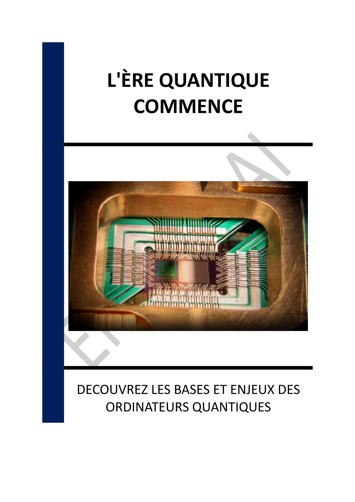

- INTRODUCTION - L'ÈRE QUANTIQUE : UNE RÉVOLUTION EN MARCHE
- Chapitre 1 - INTRODUCTION À L'INFORMATIQUE QUANTIQUE : PRINCIPES FONDAMENTAUX ET DIFFÉRENCES AVEC L'INFORMATIQUE CLASSIQUE
- Chapitre 2 - LES QUBITS : SUPERPOSITION ET INTRICATION EXPLIQUÉES
- Chapitre 3 - APPLICATIONS DE L'INFORMATIQUE QUANTIQUE : DE LA CRYPTOGRAPHIE À L'IA
- Chapitre 4 - DÉFIS TECHNIQUES : DÉCOHÉRENCE, ERREURS ET CONDITIONS ENVIRONNEMENTALES
- Chapitre 5 - PROGRÈS DES ENTREPRISES : INVESTISSEMENTS ET INNOVATIONS EN COURS
- Chapitre 6 - ENJEUX ÉCONOMIQUES : COMPÉTITIVITÉ ET INÉGALITÉS D'ACCÈS À LA TECHNOLOGIE
- Chapitre 7 - QUESTIONS ÉTHIQUES : UTILISATION RESPONSABLE ET GESTION DES DONNÉES SENSIBLES
- Chapitre 8 - CYBERSÉCURITÉ : IMPLICATIONS DE L'INFORMATIQUE QUANTIQUE POUR LA SÉCURITÉ DES DONNÉES
- CONCLUSION - VERS UN AVENIR QUANTIQUE : DÉFIS ET OPPORTUNITÉS
📄 Consulter les annexes du livre
Mentions légales